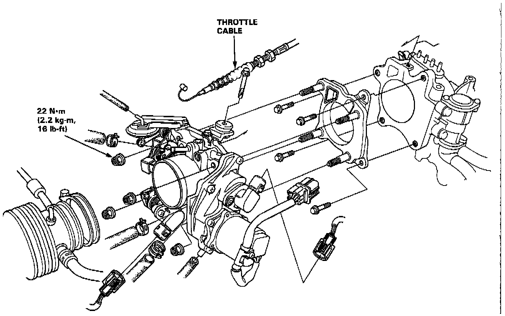

Operation CHARM
: Car repair manuals for everyone.
Home
>>
Acura
>>
1994
>>
NSX V6-3.0L DOHC
>>
Repair and Diagnosis
>>
Powertrain Management
>>
Fuel Delivery and Air Induction
>>
Throttle Body
>>
Service and Repair
Throttle Body: Service and Repair
DISASSEMBLY

Follow diagram remove and install
throttle body
. After installation, adjust the throttle cable and
idle speed
as needed.
CAUTION:
The throttle stop screw is non-adjustable.